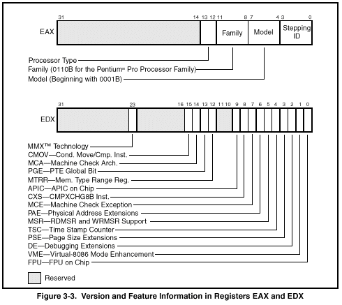

CPUID - CPU Identification
0F A2 CPUID EAX ← Processor identification information
Description
Provides processor identification information in registers EAX, EBX, ECX, and EDX. This information identifies Intel as the vendor, gives the family, model, and stepping of processor, feature information, and cache information. An input value loaded into the EAX register determines what information is returned.
Information Returned by CPUID Instruction
Initial EAX Value Information Provided about the Processor
0 EAX Maximum CPUID Input Value (2 for the Pentium ® Pro processor and 1 for
the Pentium processor and the later versions of Intel486™ processor that
support the CPUID instruction).
EBX "Genu"
ECX "ntel"
EDX "ineI"
1 EAX Version Information (Type, Family, Model, and Stepping ID)
EBX Reserved
ECX Reserved
EDX Feature Information
2 EAX Cache and TLB Information
EBX Cache and TLB Information
ECX Cache and TLB Information
EDX Cache and TLB Information
The CPUID instruction can be executed at any privilege level to serialize instruction execution. Serializing instruction execution guarantees that any modifications to flags, registers, and memory for previous instructions are completed before the next instruction is fetched and executed (see "Serializing Instructions" in Chapter 7 of the Intel Architecture Software Developer's Manual, Volume 3).
When the input value in register EAX is 0, the processor returns the highest value the CPUID instruction recognizes in the EAX register (see Table 3-4). A vendor identification string is returned in the EBX, EDX, and ECX registers. For Intel processors, the vendor identification string is "GenuineIntel" as follows:
EBX ← 756e6547h (* "Genu", with G in the low nibble of BL *)
EDX ← 49656e69h (* "ineI", with i in the low nibble of DL *)
ECX ← 6c65746eh (* "ntel", with n in the low nibble of CL *)
When the input value is 1, the processor returns version information in the EAX register and feature information in the EDX register (see Figure 3-3).

The version information consists of an Intel Architecture family identifier, a model identifier, a stepping ID, and a processor type. The model, family, and processor type for the first processor in the Intel Pentium Pro family is as follows:
• Model—0001B
• Family—0110B
• Processor Type—00B
See AP-485, Intel Processor Identification and the CPUID Instruction (Order Number 241618), the Intel Pentium ® Pro Processor Specification Update (Order Number 242689), and the Intel Pe n t i u m ® Processor Specification Update (Order Number 242480) for more information on identifying earlier Intel Architecture processors.
The available processor types are given in Table 3-5. Intel releases information on stepping IDs as needed.
Type Encoding
Original OEM Processor 00B
Intel OverDrive ® Processor 01B
Dual processor *10B
Intel reserved. 11B
Table 3-6 shows the encoding of the feature flags in the EDX register. A feature flag set to 1 indicates the corresponding feature is supported. Software should identify Intel as the vendor to properly interpret the feature flags.
BiT Feature Description
0 FPU—Floating-Point Unit Processor contains an FPU and executes the Intel 387
on Chip instruction set.
1 VME—Virtual-8086 Processor supports the following virtual-8086 mode
Mode Enhancements enhancements:
• CR4.VME bit enables virtual-8086 mode extensions.
• CR4.PVI bit enables protected-mode virtual interrupts.
• Expansion of the TSS with the software indirection bitmap.
• EFLAGS.VIF bit (virtual interrupt flag).
• EFLAGS.VIP bit (virtual interrupt pending flag).
2 DE—Debugging Processor supports I/O breakpoints, including the CR4.DE bit
Extensions for enabling debug extensions and optional trapping of access
to the DR4 and DR5 registers.
3 PSE—Page Size Processor supports 4-Mbyte pages, including the CR4.PSE bit
Extensions for enabling page size extensions, the modified bit in page
directory entries (PDEs), page directory entries, and page table
entries (PTEs).
4 TSC—Time Stamp Processor supports the RDTSC (read time stamp counter)
Counter instruction, including the CR4.TSD bit that, along with the CPL,
controls whether the time stamp counter can be read.
5 MSR—Model Specific Processor supports the RDMSR (read model-specific register)
Registers and WRMSR (write model-specific register) instructions.
6 PAE—Physical Address Processor supports physical addresses greater than 32 bits, the
Extension extended page-table-entry format, an extra level in the page
translation tables, and 2-MByte pages. The CR4.PAE bit enables
this feature. The number of address bits is implementation specific.
The Pentium ® Pro processor supports 36 bits of addressing when
the PAE bit is set.
7 MCE—Machine Check Processor supports the CR4.MCE bit, enabling machine check
Exception exceptions. However, this feature does not define the model-specific
implementations of machine-check error logging, reporting,
or processor shutdowns. Machine-check exception handlers might
have to check the processor version to do model-specific
processing of the exception or check for the presence of the
standard machine-check feature.
8 CX8—CMPXCHG8B Processor supports the CMPXCHG8B (compare and exchange 8
Instruction bytes) instruction.
9 APIC Processor contains an on-chip Advanced Programmable Interrupt
Controller (APIC) and it has been enabled and is available for use.
10,11 Reserved
12 MTRR—Memory Type Processor supports machine-specific memory-type range registers
Range Registers (MTRRs). The MTRRs contains bit fields that indicate the
processor's MTRR capabilities, including which memory types the
processor supports, the number of variable MTRRs the processor
supports, and whether the processor supports fixed MTRRs.
13 PGE—PTE Global Flag Processor supports the CR4.PGE flag enabling the global bit in
both PTDEs and PTEs. These bits are used to indicate translation
lookaside buffer (TLB) entries that are common to different tasks
and need not be flushed when control register CR3 is written.
14 MCA—Machine Check Processor supports the MCG_CAP (machine check global
Architecture capability) MSR. The MCG_CAP register indicates how many
banks of error reporting MSRs the processor supports.
15 CMOV—Conditional Processor supports the CMOV cc instruction and, if the FPU feature
Move and Compare flag (bit 0) is also set, supports the FCMOV cc and FCOMI
Instructions instructions.
16-22 Reserved
23 MMX™ Technology Processor supports the MMX instruction set. These instructions
operate in parallel on multiple data elements (8 bytes, 4 words, or 2
doublewords) packed into quadword registers or memory locations.
24-31 Reserved
When the input value is 2, the processor returns information about the processor's internal caches and TLBs in the EAX, EBX, ECX, and EDX registers. The encoding of these registers is as follows:
• The least-significant byte in register EAX (register AL) indicates the number of times the CPUID instruction must be executed with an input value of 2 to get a complete description of the processor's caches and TLBs. The Pentium ® Pro family of processors will return a 1.
• The most significant bit (bit 31) of each register indicates whether the register contains valid information (cleared to 0) or is reserved (set to 1).
• If a register contains valid information, the information is contained in 1 byte descriptors. Table 3-7 shows the encoding of these descriptors.
Descriptor Value Cache or TLB Description
00H Null descriptor
01H Instruction TLB: 4K-Byte Pages, 4-way set associative, 32 entries
02H Instruction TLB: 4M-Byte Pages, 4-way set associative, 4 entries
03H Data TLB: 4K-Byte Pages, 4-way set associative, 64 entries
04H Data TLB: 4M-Byte Pages, 4-way set associative, 8 entries
06H Instruction cache: 8K Bytes, 4-way set associative, 32 byte line size
08H Instruction cache: 16K Bytes, 4-way set associative, 32 byte line size
0AH Data cache: 8K Bytes, 2-way set associative, 32 byte line size
0CH Data cache: 16K Bytes, 2-way set associative, 32 byte line size
41H Unified cache: 128K Bytes, 4-way set associative, 32 byte line size
42H Unified cache: 256K Bytes, 4-way set associative, 32 byte line size
43H Unified cache: 512K Bytes, 4-way set associative, 32 byte line size
44H Unified cache: 1M Byte, 4-way set associative, 32 byte line size
The first member of the Pentium Pro processor family will return the following information about caches and TLBs when the CPUID instruction is executed with an input value of 2:
EAX 03 02 01 01H
EBX 0H
ECX 0H
EDX 06 04 0A 42H
These values are interpreted as follows:
• The least-significant byte (byte 0) of register EAX is set to 01H, indicating that the CPUID instruction needs to be executed only once with an input value of 2 to retrieve complete information about the processor's caches and TLBs.
• The most-significant bit of all four registers (EAX, EBX, ECX, and EDX) is set to 0, indicating that each register contains valid 1-byte descriptors.
• Bytes 1, 2, and 3 of register EAX indicate that the processor contains the following:
— 01H—A 32-entry instruction TLB (4-way set associative) for mapping 4-KByte pages.
— 02H—A 4-entry instruction TLB (4-way set associative) for mapping 4-MByte pages.
— 03H—A 64-entry data TLB (4-way set associative) for mapping 4-KByte pages.
• The descriptors in registers EBX and ECX are valid, but contain null descriptors.
• Bytes 0, 1, 2, and 3 of register EDX indicate that the processor contains the following:
— 42H—A 256-KByte unified cache (the L2 cache), 4-way set associative,
with a 32-byte cache line size.
— 0AH—An 8-KByte data cache (the L1 data cache), 2-way set associative, with a
32-byte cache line size.
— 04H—An 8-entry data TLB (4-way set associative) for mapping 4M-byte pages.
— 06H—An 8-KByte instruction cache (the L1 instruction cache), 4-way set associative,
with a 32-byte cache line size.
Operands Bytes Clocks
2 14 NP
Flags
None.
Created with the Personal Edition of HelpNDoc: Free HTML Help documentation generator